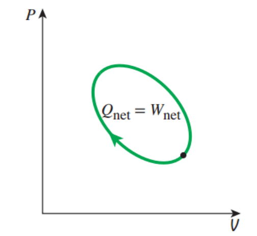
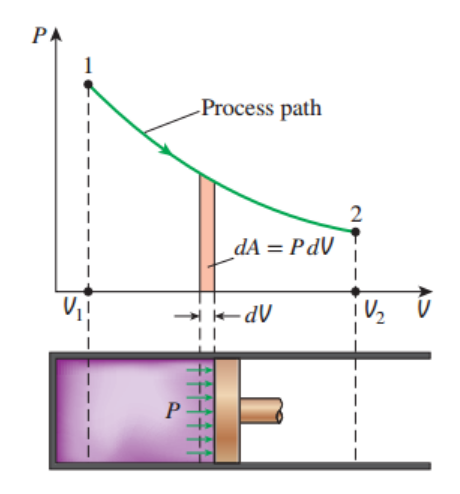
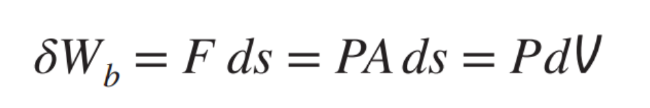
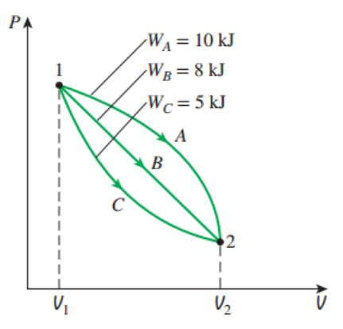
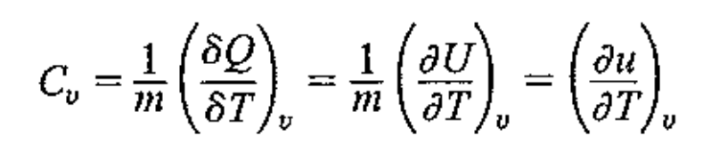
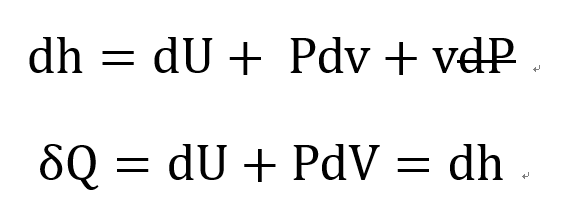
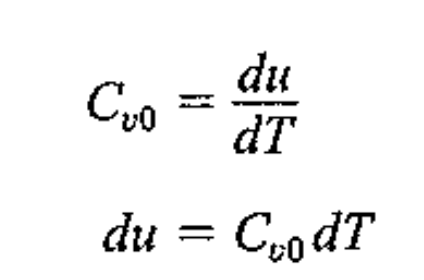
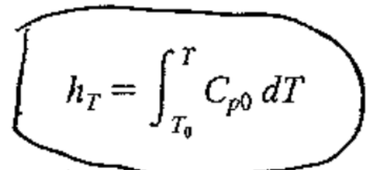
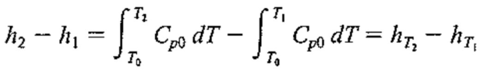

자 이제 시스템의 에너지를 조금 더 분석해보자.
![[Thermodynamics] Ch 3. Energy equation and 1st law of T.D](./images/img-001.png)
변화의 정의에 따라서, in-out으로 변화량을 계산할 수 있다.
Ch1에서 시스템을 정의할때, 들어오고 나가는 에너지의 종류는 Only 2가지라고 하였다.
Work and heat.
들어오는 Heat (+)
나가는 Work (-)
라고 정의하면 다음과 같이 식을 나타낼 수 있다.
![[Thermodynamics] Ch 3. Energy equation and 1st law of T.D](./images/img-002.png)
자, 이 식이 바로 에너지보존법칙 열역학 제 1법칙이다.
이 식에서 E와 Q,W의 변화량이 다른 식으로 표현되어 있음을 알 수 있다.
이게 사실 열역학 제 1법칙의 핵심이다.
System 의 에너지는 State function이고,
Q,W는 Path function 이라는 것이다.
즉, Q와 W의 변화량은 process경로에 따라서 바뀌지만 -> Path dependent
E는 처음,끝 지점에에 따라서만 결정된다 -> Path independent
따라서,

위 처럼 Cycle process일때, 즉 시작점과 끝점의 state가 동일할때
dE = 0 이기 때문에, 적분해주면 열역학 제 1법칙은 다음과 같이 표현된다.
![[Thermodynamics] Ch 3. Energy equation and 1st law of T.D](./images/img-004.png)
따라서, 나중에 배울 Heat engine refrigerator cycle 에서
cycle process에서 들어오는 열과 나가는 에너지는 같다는 결론이 나온다.
이제 열과 에너지에 대해서 조금 더 자세하게 알아보자.
1. 일
보통 일은 Flow work, Shear(viscous) work, Shaft work로 나뉜다.
유체역학에서는 위 3가지중, Flow work, shear work를 위주로 다루었지만,
열역학에서는 Flow work ,shaft work를 다룬다.
먼저, Flow work (Boundary work)는
쉽게 생각하면, Boundary의 팽창 혹은 수축으로 인한 일.
고등학교 물리시간에 배우는 일의 형태는,
정의에 따라서, 힘과 평행한 이동거리의 곱으로 표현된다.
이제 밑의 그림의 피스톤의 경우를 정의대로 해석해보자.


F = PA를 적용하면, Ads = dV라는 것을 쉽게 케치할 수 있다.
따라서,적분해주면
![[Thermodynamics] Ch 3. Energy equation and 1st law of T.D](./images/img-007.png)
다시 언급하지만 일은
path dependent
하기 때문에 1->2 로 갈때,
경로에 따라서 일이 달라질 수 있음을 아래 그래프를 통해서 확인 할 수 있다.

2. 열
Heat는 온도가 높은 곳에서 낮은 곳으로의 에너지 흐름이다.
열전달 과목에서 배우지만, 에너지가 전달되는 즉 열의 방식에는 3가지
전도,대류,복사가 있다.
(자세한 내용은 열전달 에서)
가장 중요한 개념은 바로 열은 전달되는 에너지를 의미한다.
즉, 열을 어떤 물체 혹은 body가 함축하고 있다는 것은 말이 안된다.
이동하는 에너지 = 열, not stational
열도 일과 마찬가지로 path dependent하기 때문에
State 1->2로 이동할때, 경로에 따라서 열의 크기가 달라진다.
자 지금까지 시스템 에너지의 변화량에 관여하는 두가지,
열 일
에 대해서 알아보았다.
여기서 시스템의 에너지 는 ch1에서
e = u + KE + PE
u:내부에너지, KE:운동에너지, PE:퍼텐셜 에너지
임을 확인 하였고,
내부에너지
에 대해서 자세하게 알아보자.
3. 내부에너지
[ch1에서 다루었지만]
u = u_ext + u_int + u_translational
이렇게 내부에너지는 3가지로 나누어졌다.
여기서 이상기체의 경우 분자들간의 거리가 무시되고( u_ext = 0 ),
나머지 항들 모두 온도와 비례하는 항이기 라는 것을 알 수 있다.
따라서,
![[Thermodynamics] Ch 3. Energy equation and 1st law of T.D](./images/img-009.png)
즉, T -> thermodynamic porperty이므로
u -> Thermodynamic property
임을 알 수 있다.
결국 state들마다, u를 알 수 있다는 말이다.
물의 경우 Triple point (0.01도에서) u = 0이라고 정의한후,
dQ = du를 활용하여, 다른 점들의 내부에너지를 모두 표에 표기하였다.
4. 엔탈피 (Enthalpy)
엔탈피는,
h = u + Pv
라고 과학자들이 정의
[왜이렇게 정의했는지는 바로 뒤에 비열을 설명하면서 같이 설명하겠다]
일단, 저렇게 정의하게 되면 이상기체의 경우,
h = u(T) + RT = h(T)
이므로,
즉 h또한 온도에 관한 함수로 표현 된다.
따라서,
h
또한
Thermodynamics property
라는 것을 확인 할 수 있다.
4. Specific Heat (비열)
비열을 중학교때 배웠던 기억이 다들 있을 것이다,
:1도 1kg올리는데 필요한 열량
열역학에서는 비열을 두 종류, 부피일정, 압력일정으로 나누어서 해석한다. why?
보통 두가지 process가 흔히 일어나기 때문에.
a) Constant volume specific heat

자 constant volume인 경우, 일이 존재하지 않으므로
dQ = dU
따라서, 위 식처럼 질량으로 나눈 u로 Cv 표현 가능.
b) Constant pressure specific heat
Constant pressure 인 경우,

위 식을 통해서 dQ = dh 임을 확인 할 수 있다.
이게 바로 엔탈피를 h = u + Pv로 정의한 이유이다.
즉, 엔탈피 변화량은 일정한 압력인 과정에서 투입된 열량과 동일하다!
이제 비열 정의에 대입해주면,
![[Thermodynamics] Ch 3. Energy equation and 1st law of T.D](./images/img-012.png)
5. 고체 액체, Specific Heat (비열)
고체 액체에서는 specific volume v의 변화량은 거의 0이고,
뿐만아니라 v는 매우 작다.
따라서, h = u + pv
dh = du + pdv + vdP = du
결국 Cp = Cv임을 확인 할 수 있다.
따라서, 비열은 일정하다고 해도 무방하다.
6. 이상기체, Specific Heat (비열 )
이상기체의 경우가 계속해서 나오고 있는 이유는,
u = u(T), h = h(T) 라는 성질
이 굉장히 유용하기 때문이다.
비열식에 대입해주면,
(0은 이상기체일때라는 표시)

![[Thermodynamics] Ch 3. Energy equation and 1st law of T.D](./images/img-014.png)
즉, Cv0와 Cp0모두 온도에 관한 함수이다.(u(T),h(T)이기 때문)
온도에 따라서, 기체별로 Cpo의 값을 나타내주는 그래프
![[Thermodynamics] Ch 3. Energy equation and 1st law of T.D](./images/img-015.png)
분자별로 Temperature dependency를 결정하는 요소는,
분자의 vibration
복잡한 분자일수록 vibration이 많이 일어나, 비열이 커진다.
자 그렇다면, 비열을 이용해서 Enthalpy를 유도해보자.
3가지 방법.
1. Constant Specific heat.
![[Thermodynamics] Ch 3. Energy equation and 1st law of T.D](./images/img-016.png)
단순하게, 그냥 T2,T1평균온도에서, Specific heat 값을 읽고 일정하다고 가정한다.
2. Reference Enthalpy

기준을 하나 T0로 잡고 적분해준다. 결국 우리는 보통, 엔탈피의 변화량을
계산하기 때문에

다음과 같이 유도할 수 있게 된다.
3. Function of T
![[Thermodynamics] Ch 3. Energy equation and 1st law of T.D](./images/img-019.png)
위의 표처럼, 실험적으로 구한 C(T) 함수를 사용하여 정확한 값을 구할 수 있다.